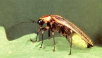

Fireflies: The Twinkle In Nature's Eye
Fireflies bring magic to warm summer evenings.
By Terry Krautwurst
June/July 2004
It was back in the days when my old friend Hugh was a new friend. We'd just finished dinner at his cabin in North Carolina's Saluda Mountains. "Let's go for a walk," he said, "I have something to show you." Noting a suspicious glint in his eyes, I asked him what was up. "You'll see," he said. "Here, take a flashlight. It'll be dark by the time we get back."
So we filed outside, Hugh in the lead and my wife, Laurel, and I following and exchanging "now-what?" glances. He led us onto an old logging road that plunged deep into the early-summer woods. The darkening forest was hushed, save for occasional twilight birdsong. All around were tangles of rhododendron and wizened old oaks towering above bracken fern. It was the sort of woodland where, at any turn, you would half expect to see an impish elf. But the magic we were about to witness far surpassed any mere fantasy.
"Here," Hugh declared, stopping as we came into a small clearing.
"Where?" I asked, looking round.
"Just wait," Hugh said, mysterious as ever. "Just wait."
And so there we stood, waiting, as dusk gradually turned to night.
"Hey, look - lightning bugs," Laurel remarked, pointing into the distance.
"Uh huh," Hugh said.
"Wow, they're everywhere," I said, now noticing hundreds, no thousands, of tiny lights rising from the ground in every possible direction.
"Uh huh," Hugh said.
"I don't believe it," Laurel whispered. "They're not flashing. They're just ... on all the time."
"I told you I had something to show you," Hugh said.
All around us now in the blackness, suspended at our feet and far off into the dark woods, never more than 10 inches above the forest floor, was a bejeweled, undulating carpet of countless steadily glowing, slowly drifting fireflies. Together the wee lights seemed to mirror the terrain, dipping where there were gullies, rising with hills, each floating spark moving in slow motion, some circling in restless eddies, some gliding on a steady path. It was as though we giants had somehow come upon a shifting sea of light and were standing calf-deep among the rolling, glittering waves. Slowly, isolated groups of the fireflies rose 4 or 5 feet and commenced flashing - clouds of living stars twinkling above a luminous ocean.
I cannot tell you in biological terms what we witnessed that night. I've neither seen nor heard of anything like it since. The entomologists I've asked seem puzzled, especially by the fireflies" steady glow and by their sheer numbers. Perhaps we happened to be in the right place at the right time to see a rare large hatch, a massive emergence of glowing pupae in their first moments of firefly adulthood.
All I know is that to this day, Hugh, Laurel and I speak in reverent tones when we recall "the Firefly Night." For us, it's one of those shared experiences that go into the glue that binds friends for good. So what if what we witnessed was only some cog in a life cycle's wheel? It was magic - the sort that makes a person just that much gladder to be alive.
And that, I think, sums up the relationship that has always existed between humans and fireflies. Never mind how and why they do what they do. We're talking about an insect that mimics the stars.
In recent years, though, scientists have learned that the firefly's biology may be as impressive as its wondrous glow.
Language of Love
There are some 2,000 species of fireflies, many of them native to the tropics in South America and the Pacific Ocean. They're all members of the family Lampyridae, which loosely translated means "shining fire." And there's not a true fly among them - with two pairs of wings rather than the fly's single pair, fireflies are beetles.
Like many other members of that clan, they depend on two stiff outer wings for armor when at rest, and in the air hold those wings out to either side as stabilizers while powering their flight with the other wings. Fireflies are bottom heavy so they fly like Tinker Bell, with their bodies nearly vertical.
In the United States there are about 150 firefly species, most residing in the East, from about central Kansas eastward. Typically in a given region a half dozen or more species share the same living space. This can cause problems, not only for people trying to study them but for the insects themselves, because most fireflies - despite variations in size and color - look a lot alike.
Scientists, in fact, remained essentially in the dark about the insects" diversity until they were enlightened by flash-pattern research in the 1940s. Different species, it turned out, could be identified by the distinctly different flashes each uses to locate mates of its own kind.
This arrangement makes a lot of sense. While groping around in the dark may work OK in your average singles bar, it's a risky technique in the predator-infested bug-eat-bug world of fireflies. So instead, each species has developed a code that allows compatible males and females to locate one another from a distance.
Generally, the males fly around flashing and searching while the females watch and wait on the ground. The codes can be extraordinarily complicated; timing, it seems, is everything. Some fireflies flash rapidly twice, then stop, repeating the code every 7.5 seconds. Others flash just once at intervals of precisely 5.3 seconds. Some flash as many as 11 times in a row. Still others use combinations of long and short flashes, like the dot-dash language of Morse code.
When a female spies a male winking her kind of wink, she waits a precise interval specific to her species and then answers back in kind. The male then responds, also after a species-discerning interval, and a dialogue ensues. In some types, the conversation is straightforward and always results in mating. In others, the outcome is less certain. Males that flash faster or brighter than the average suitor may get an enthusiastic, superbright come-hither response from the female, while lackluster Lotharios may get a cold shoulder - a ho-hum dim blink - or no more talk at all.
Meanwhile, throwing a potentially fatal kink in the goings-on are predatory females - members of the genus Photuris" who have learned to imitate the codes of at least seven other species. Hungry for more than love, they lure unsuspecting males in, then gobble them up. Because adult fireflies live for only a few weeks and with the sole purpose of mating, many kinds eat nothing at all, or only pollen or nectar. All firefly larvae, though, are voracious predators, particularly of slugs and snails. This is great news for gardeners; firefly larvae live in and on the soil for up to two full growing seasons before pupating and emerging as adults.
Light Fantastic
Of course, it's the firefly's light production that fascinates humankind most, and rightly so. One of our most prized contrivances, the incandescent light bulb, can't hold a candle to the lightning bug. The bulb: 10 percent efficient; 90 percent of its energy lost as heat. The bug: 95 to 99 percent efficient; 1 to 5 percent of its energy lost as heat.
And this occurs within a space about the size of ... well, the word "of." A firefly's light organ consists of two layers of cells within the insect's abdomen. The upper layer is made of reflector cells that intensify the light, like the chrome behind a car's headlight. The bottom layer contains a compound known as luciferin and a reaction-instigating enzyme called luciferase. Both layers contain an array of air tubes through which oxygen can enter. The other major player in firefly magic is ATP or adenosine triphosphate, a protein found in the cells of all living organisms. It is the basic source of energy for all cell activity. Every blink of an eye, every pulsation of a paramecium, is powered by the universal currency of cell energy, ATP.
So of course ATP is in firefly cells, too. When oxygen and luciferin combine in the presence of luciferase and ATP, a chemical reaction occurs and energy is released in the form of light. Scientists aren't sure how, but it's clear that a firefly can control its flashes. Some entomologists think that an adult firefly's real distinction may be its ability to turn the light off, since immature stages - eggs, larvae (sometimes called "glowworms" ) and pupae - glow constantly. The beauty of the chemistry here, other than the lovely light produced, is that it can be used in laboratories to test for the presence of otherwise invisible life such as bacteria. Because luciferin and luciferase produce light only in combination with ATP, which exists only in living cells, tests that utilize firefly chemicals can quickly measure bacteria levels in meat and dairy products and municipal water supplies - no glow, no problem. Likewise, physicians can use such tests to detect bacterial infections.
Technological ingenuity notwithstanding, the best application for fireflies I know of involves a tradition long practiced in rural areas of Japan: On summer nights, parents release a handful of fireflies under the mosquito netting over their child's bed so that the youngster can drift off to sleep beneath a tiny galaxy of twinkling stars.
I think of that, of my own Firefly Night and of the countless generations of humans who have been charmed by these flickering little beetles, and I know that nature is more than cold, hard science. No doubt about it: fireflies are magic, adding wonder and spark to our lives.
|
E.R. DEGGINGER/COLOR PIC INC. A firefly-studded meadow in New Jersey. |
KEVIN ADAMS The Pyralis firefly, common east of the Rocky Mountains. |
 DWIGHT KUHN The Pennsylvania firefly, common from the Atlantic coast to Texas and north to Manitoba. |
 MATT BENDANIEL/BRUCE COLEMAN INC. Fireflies blend with the stars above Plymouth, Mass. |
|
|